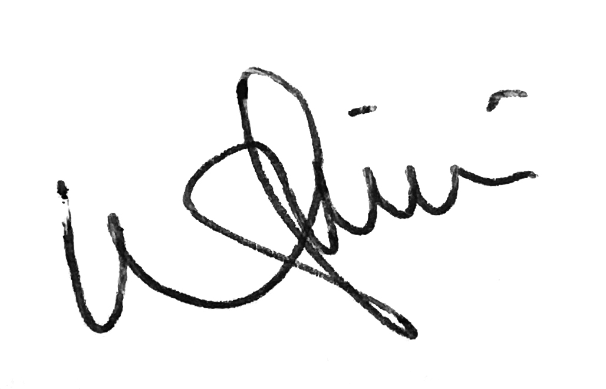

Student Agreement
Fab Academy Student Agreement
-
The Fab Academy is responsible for:
- Teaching principles and practices of digital fabrication
- Arranging lectures, recitations, meetings, and events for the class
- Evaluating and providing feedback on student work
- Offering clear standards for completing assignments
- Certifying and archiving student progress
- Supervising class preparation
- Reviewing prospective students, instructors, and labs
- Providing central staff and infrastructure for students, instructors, and labs
- Fund-raising for costs not covered by student tuition
- Managing and reporting on the program’s finances, results, and impacts
- Publicizing the program
- Promoting a respectful environment free of harassment and discrimination
- Attending class lectures and participating in reviews
- Developing and documenting projects assigned to introduce and demonstrate skills
- Allowing the Fab Academy to share my work (with attribution) in the class for purposes compatible with its mission
- Honestly reporting on my work, and appropriately attributing the work of others
- Working safely
- Leaving workspaces in the same (or better) condition than I found them
- Participating in the upkeep of my lab
- Ensuring that my tuition to cover local and central class costs is covered
- Following locally applicable health and safety guidance
- Promoting a respectful environment free of harassment and discrimination
I am a Fab Academy student, responsible for:
Tay Willie 